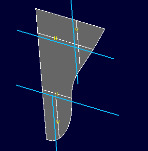
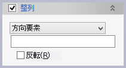

ボディ分割(線)
ボディをスケッチを投影した線で分割してして新たなボディを作成します。

操作方法
パラメータの入力後OKボタンで実行します。
パラメータ
- 対象ボディ

分割をするボディを選択します。 - 分割線

ボディを分割するスケッチを選択します。 - 整列（オプション）

このコマンドで作成されたボディにはシステムが通し番号を割り振り、別の要素がボディ（やそのフェイスなど）を参照する際にはこの通し番号が使われます。通し番号はボディの座標値の大小によって決まりますが、整列オプションを利用すると任意の方向に沿った順番とすることができます。
- 関連（オプション）


対象ボディ、分割線との関連づけを指定して、新しいボディが対象ボディや分割線の変更に追従するようにできます。既定値は「フィーチャー」です。